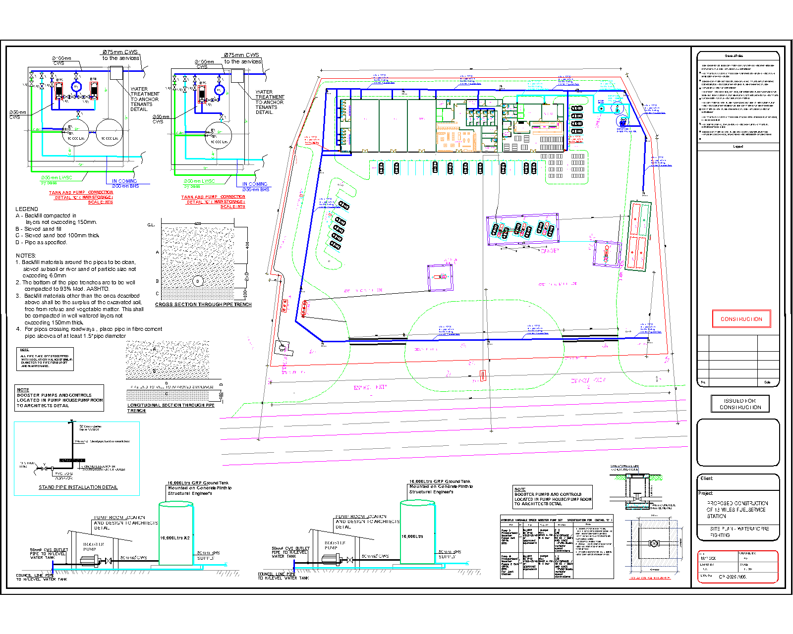

Service-station drawing set
13 Miles — building & site services
Five coordinated sheets covering shop HVAC, internal water services, drainage, external water supply and the wider mechanical site arrangement.
- Scope shown
- HVAC, water & sewer
- Drawing content
- 5 drawing sheets
- Source
- CAD drawing / PNG export
{kind=link}
Use + and − to zoom, then scroll or swipe to explore. With the drawing focused, use the arrow keys to pan and 0 to reset. This 1600 × 1280 PNG is a portfolio preview; small annotations are limited by its export resolution.
- HVAC layout & schedules ↗
- Internal water services ↗
- Sewer layout & drainage details ↗
- External water & storage ↗
- Mechanical site & sewer layout ↗
Drawing supplied by Chinunka Chabala. Original title-block credits and issue status are retained.
A closer look
Read the drawing in layers.
Equipment layout
Shop equipment, outdoor-unit positions and extract routes shown within the building plan.

Tank and pump arrangements
Connection details shown alongside the external water distribution drawing.
Have a drawing scope to discuss? Share your project requirements with Mac Key Grip.
Discuss on WhatsApp ↗View more work →